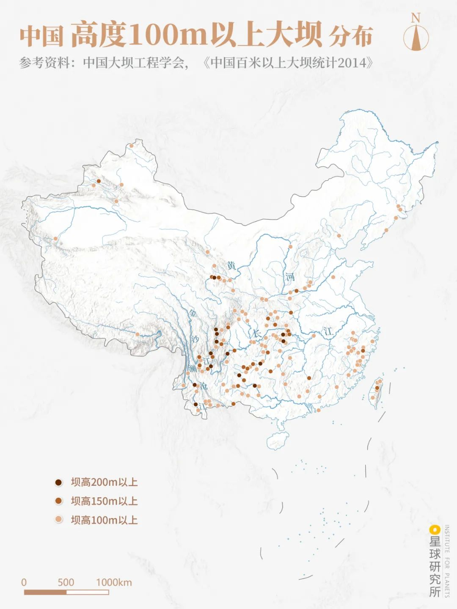
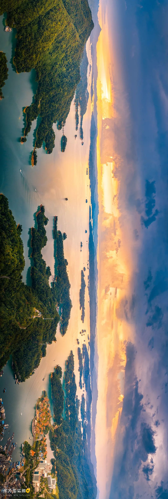
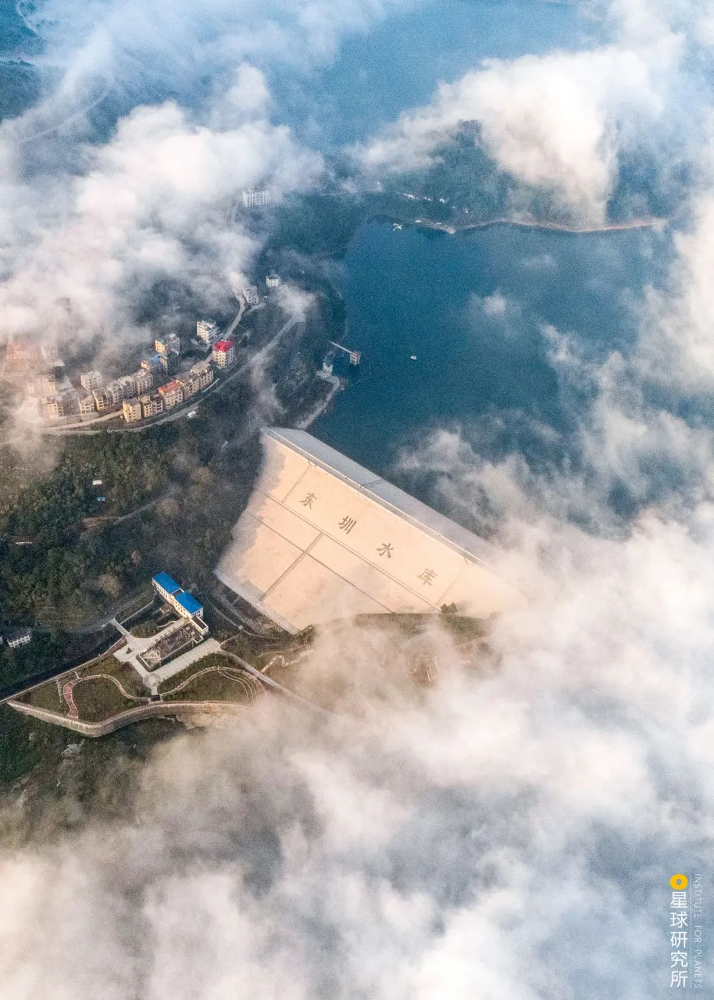
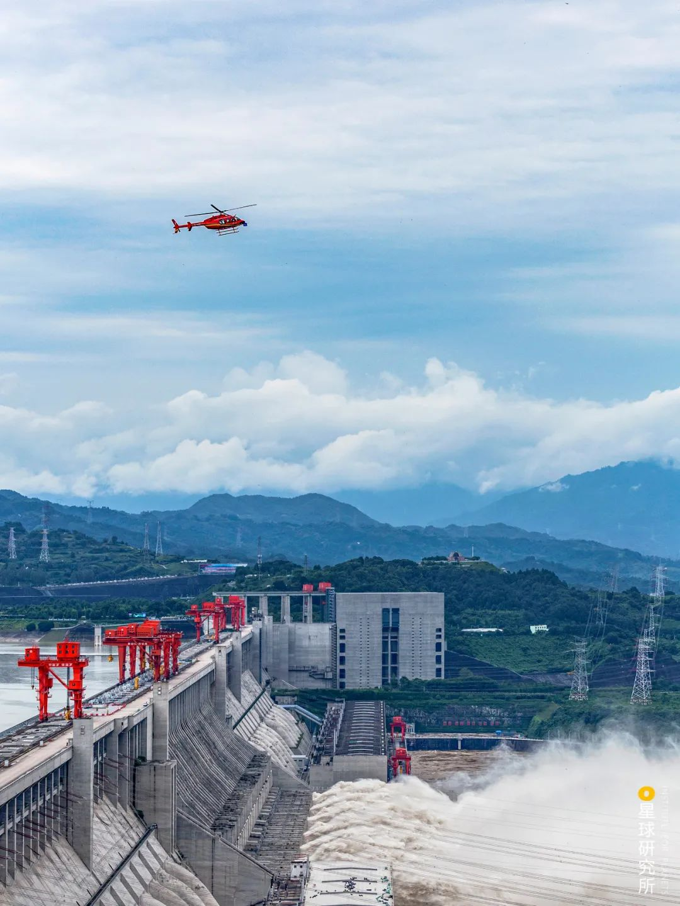
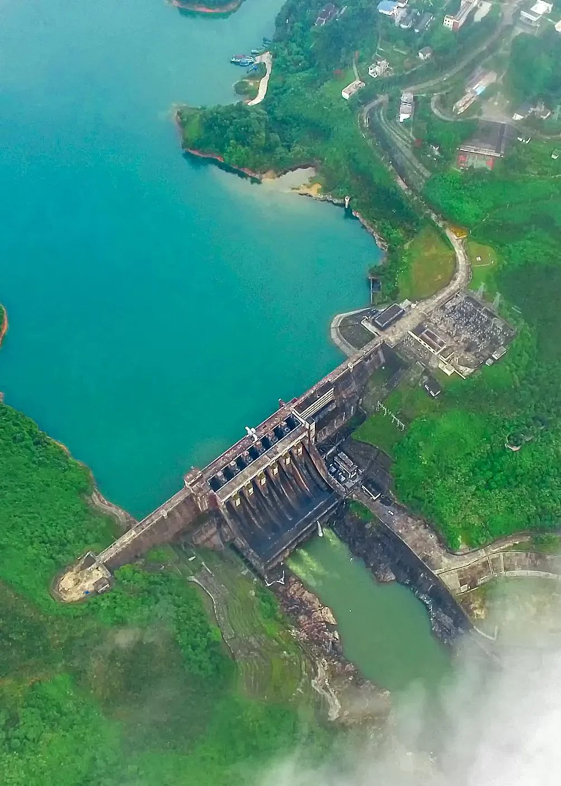

10万座大坝的诞生
↑一群国家地理控，专注于探索极致世界
中国
是世界上河流最多的国家之一
4.5万余条江河
纵横交错
遍布960万平方千米的大地
（上述河流数量仅包括流域面积50平方千米及以上的河流，下图为中国主要河流分布，制图@郑艺/星球研究所）
▼
中国
还是世界上水旱灾害最多的国家之一
有文献记载以来
1092次水灾、1056次旱灾
让数千年的中华文明发展史
成为一部人与水旱灾害的抗争史
（上述数据仅统计至1949年，下图为洪流中的钱塘江，摄影师@肖奕叁）
▼
一边江河奔流、哺育众生
一边灾害频发、民不聊生
两种截然相反的特征
也促使中国发展成为
全球大型水利设施最发达的国家
没有之一
其中最为突出的
便是遍布中国大地
拦蓄近9000亿立方米库容的
近10万座水坝
（国际大坝委员会规定，坝高超过15米，或者库容超过300万立方米、坝高在5米以上的坝为大坝，下图为中国高度100m以上大坝分布，制图@郑艺/星球研究所）
▼
它们可以挡水
拦截滔滔洪流
（请横屏观看，2020年7月，新安江水库九孔泄洪（即千岛湖，位于浙江省杭州市淳安县境内，大坝建于建德市岭后，钱塘江上游新安江主流上，是浙江省杭州市面积最大的水体），摄影师@吕杰琛）
▼
可以蓄水
保障供水、灌溉
（请横屏观看，新丰江水库是香港、深圳等诸多城市的重要饮用水源之一，摄影师@剑胆琴心）
▼
也可以抬高水位
发展水电、改善航道
（灯火通明的白鹤滩水电站（位于四川省凉山州宁南县和云南省昭通市巧家县境内，是金沙江下游干流河段梯级开发的第二个梯级电站），建成之后将成为仅次于三峡水电站的世界第二大水电站，摄影师@柴峻峰）
▼
中国也因此成为了
世界上拥有水库大坝最多的国家
（根据《碾压式土石坝设计规范（2001）》，坝体按照高度可以分为：＜30m为低坝，30-70m为中坝，＞70m为高坝；下图为世界主要国家坝高30m以上的大坝数量分布，制图@郑艺/星球研究所）
▼
我们究竟是如何建造出
数量如此众多的大坝的？
01 水来土掩
人们就近取土、层层夯实
筑起上窄下宽的高墙
拦住上游来水
最古老的
土坝
便诞生了
（土坝的建造型式众多，下图为均质土坝示意，制图@罗梓涵/星球研究所）
▼

经过压实的土料颗粒
依靠彼此间紧密咬合
大大增强了坝体的稳定
颗粒间明显减小的孔隙
又能阻碍水的流动
令其具备较强的防渗功能
从而实现
“兵来将挡，水来土掩”
（土料压实前后防渗对比，制图@罗梓涵/星球研究所）
▼
甚至在条件足够理想时
无需机械夯实
凭借土料自身的重量
就能层层压实、筑起大坝
（上述筑坝方式称为水中填土法，黄土高原上的汾河水库大坝，是全球首个使用水中填土施工的大坝，位于山西太原，摄影师@王蒙）
▼
当然
除了土料
卵石、砂石以及人工开采的块石等
均可用来堆筑大坝
人称
堆石坝
但与细密的土料不同
石料颗粒粗、硬度大
极易发生渗水
即便机械压实
也收效甚微
（堆石坝渗水示意，制图@罗梓涵/星球研究所）
▼

于是工程师们
利用石料、土料“双管齐下”
或在堆石坝中央
增设一道直立的土质防渗墙
成为
心墙堆石坝
（心墙堆石坝结构示意，制图@罗梓涵/星球研究所）
▼
（碧口水库大坝便是一座心墙堆石坝，位于甘肃文县，画面前方是经电站流出的水体，来源@视觉中国）
▼
或是将防渗墙倾斜布置
则为
斜墙堆石坝
（斜墙堆石坝结构示意，制图@罗梓涵/星球研究所）
▼
家喻户晓的小浪底大坝
高达160米
是中国最高的斜墙堆石坝
（请横屏观看，气势如虹的小浪底大坝，坝顶长1667米、宽15米，位于黄河中游，摄影师@林治坤）
▼
正是这样一座大坝
让小浪底水库的蓄水量
达到126.5亿立方米
超过2个太湖
也正因如此
黄河下游的防洪标准
得以提升至1000年一遇
让近1亿人口免于水患
（太湖的蓄水量约为56亿立方米，下图为小浪底大坝泄洪场景，摄影师@张子玉）
▼
然而
能够防渗的并非只有土料
混凝土甚至拥有
更小的孔隙、更强的防渗
只不过
相对于颗粒松散
且在水体挤压下
易发生轻微变形的堆石坝
混凝土还是太过“坚硬”
二者截然不同的变形程度
令它们无法“齐心协力”
共同抵抗奔腾的江河
直到20世纪80年代
我国开始引入一种新型设备
振动碾
它如同一台超强力“压路机”
经其碾压后的石料
颗粒密实、硬度增大
抗变形能力大幅加强
足以与混凝土旗鼓相当
（堆石坝的建造场景，来源@视觉中国）
▼
自此以后
堆石坝终于能获得混凝土的加持
只要在坝体的上游一侧
铺设一层混凝土面板
便能完成防渗
这便是
面板堆石坝
（面板堆石坝结构示意，制图@罗梓涵/星球研究所）
▼
由于这种坝型施工快、造价低
一经问世便迅速风靡全国
其中位于湖北恩施的
水布垭大坝
高度达到233米
一举成为当时世界最高的面板堆石坝
（清江上的水布垭大坝，坝体上可见Z字型马道，用于排水、检修、交通等，摄影师@李云飞）
▼
以上种种
由土料和石料堆筑的大坝
统称为
土石坝
由于它的
材料易得、结构简洁、施工简便
因此应用极为广泛
据相关数据统计
在我国近10万座水坝中
各种土石坝的数量
占到95%以上
几乎是大江南北、遍地开花
（东圳水库大坝，一座设有心墙的土石坝，位于福建莆田，摄影师@DJY俊逸）
▼
可即便数量如此庞大
但是泥土、碎石等筑坝材料
本身属于松散颗粒
这便注定了土石坝
并非十全十美
一方面
无论如何压实
颗粒间的孔隙依然存在
经年累月下
发生渗流在所难免
另一方面
松散的土石料表面
难以抵抗猛烈的水流冲刷
因此土石坝不允许洪水漫顶
必须在远离坝体的位置
增设专门的泄洪通道
（水布垭大坝和右边的溢洪道，点击查看泄洪场景，摄影师分别为@李顺武@谭江弘）
▼
那么
我们如何才能建起
更加坚固的大坝呢？
02 一夫当关
不妨想象
将一块巨石置于水中
只要其重量足够
就能与地基间产生
足够强大的摩擦力
令其在汹涌的水流中岿然不动
类似地
如果能够人工打造一块这样的巨石
便能以其“一己之力”
抵挡奔腾而来的江河之水
堪称
“一夫当关，万夫莫开”
这便是
重力坝
（重力坝示意，制图@罗梓涵/星球研究所）
▼
为此
坚硬、致密的混凝土
再次进入人们的视线
以其浇筑的
混凝土重力坝
不仅能够拦水截流
而且其本身足够坚固
因此可以在坝身上设置泄水孔
甚至建造可直接溢流的坝段
（正在泄水的丹江口大坝，位于湖北丹江口，摄影师@白?帆。另：在混凝土重力坝出现之前，早期的重力坝多由石灰浆黏结石块而成）
▼
尤其在大江大河之上
每逢汛期水位暴涨
一座座混凝土重力坝
便如“定水神针”一般
成为防洪的中坚力量
例如
坐镇金沙江的
向家坝水库大坝
（向家坝水库大坝，位于云南水富，点击查看各部分结构，摄影师@柴峻峰）
▼
驻守黄河的
三门峡大坝
（三门峡大坝，位于河南三门峡，点击查看各部分结构，摄影师@黄雪峰）
▼
以及
横亘于长江的
三峡大坝
这座高181米
全长2309米的庞然大物
以超过1600万立方米的混凝土打造而成
能拦蓄221.5亿立方米的洪水
与4个太湖的蓄水量相当
（请横屏观看，拦截长江的三峡大坝，位于湖北宜昌，点击查看各部分结构，摄影师@李心宽）
▼
自大坝竣工以来
曾在2010年、2012年和2020年
三次长江大洪水中
削减洪峰40%左右
极大地减轻了
长江中下游地区的防洪压力
（2020年夏季三峡大坝泄洪的场景，摄影师@李心宽）
▼
然而
稳立于洪涛的重力坝
却也并非无懈可击
它还必须战胜一个
“看不见的敌人”
人称扬压力
这种特殊的作用力
由两部分共同组成
其一是地基渗水和坝体渗水
所产生的渗透压力
其二则是淹没于水下的坝体
所承受的上浮力
在扬压力的作用下
坝体相当于被向上“托举”一般
极不利于坝体稳定
（重力坝扬压力示意，制图@罗梓涵/星球研究所）
▼
为此
工程师们千方百计
试图在保证坝体稳定的同时
尽可能减小坝体与地基间的接触面
从而避免产生过大的扬压力
比如
将坝体内部分段收缩
形成一节节空腔
成为
宽缝重力坝
（宽缝重力坝结构示意，制图@罗梓涵/星球研究所）
▼

（新安江大坝，中国第一座宽缝重力坝，摄影师@方建飞）
▼
甚至直接将坝体的下部掏空
形成一座“空腹”的
空腹重力坝
（空腹重力坝结构示意，制图@罗梓涵/星球研究所）
▼

（中国第一座空腹重力坝是上犹江水库大坝，位于江西赣州。下图的牛路岭水电站大坝也是一座空腹重力坝，位于海南琼海，来源@视觉中国）
▼
可是到这里
人们就能高枕无忧了吗？
可惜
答案是否定的
因为宽缝也好，空腹也罢
重力坝的体型依然过于庞大
混凝土浇筑时的
温度条件、施工步骤
更是复杂
（三峡大坝施工的场景，来源@视觉中国）
▼
但工程师们
并没有知难而退
而是转而改用
掺杂粉煤灰的特殊混凝土
结合与土石坝相同的碾压方式
建成取长补短、优势互补的
碾压混凝土重力坝
这种新型筑坝技术
既能减少混凝土用量
又能简化施工步骤
还能便于大型机械施工
从而缩短工期、降低造价
可谓一举多得
（1986年我国建成了第一座碾压混凝土大坝，坑口水库大坝，位于福建三明，来源@三明市大田县融媒体中心）
▼
也正因如此
众多愈发宏伟的大坝拔地而起
从101米高的
水口大坝
（闽江上的水口大坝，位于福建福州，来源@视觉中国）
▼
到200.5米高的
光照大坝
（光照大坝、沪昆高铁、北盘江特大桥，三大超级工程同框，位于贵州黔西南，摄影师@王璐）
▼
再到目前世界上最高的
碾压混凝土重力坝
龙滩大坝
它高216.5米
已经远远超过
我国最高的常规混凝土重力坝
三峡大坝
（红水河上的龙滩大坝，位于广西河池，摄影师@姚王度）
▼
而若要进一步
实现坝高的突破
同时还能进一步
控制用料和成本
那么是否
存在更加精巧的结构呢？
03 借力打力
在广东省北部
一座体态轻盈、造型优美的大坝
巍然屹立于峡谷之中
其坝体向上游方向拱起
厚度与高度之比仅有0.11
这就是坐落在广东韶关的
泉水大坝
这是中国最薄的
拱坝
（南水河支流上的泉水拱坝，来源@视觉中国）
▼
这种结构精巧的坝型
除了依靠坝体自重
更关键的
则是利用拱形结构
将绝大部分水体推力
传向两岸坚实的山体
以山体产生的反作用力
令坝体维持稳定
堪称名副其实的
“借力打力”
（拱坝示意，制图@罗梓涵/星球研究所）
▼
有了山体的分担
拱坝的体积
一般仅为同等高度重力坝的30-60%
可谓是既美观又经济
（耒[lěi]水河上的东江大坝，坝体轻薄，坝顶最窄处仅有7米宽，位于湖南资兴，摄影师@姚王度）
▼
更为精妙的是
正常状态的拱坝
在自身重力、水体推力
基岩支撑、温度变化等
诸多条件综合作用下维持平衡
如果遭遇突发情况
某个条件发生改变
其余条件仍能保证坝体稳定
这便是超静定结构
因此
拱坝具备
出类拔萃的安全性
其超载能力甚至可以达到
设计性能的10倍以上
以汶川的沙牌拱坝为例
它距离5 · 12汶川大地震震中
仅有36千米
即便当时的水库满载运行
在经历地动山摇之后
坝体也未受到明显损害
（岷江支流上的沙牌拱坝，位于四川汶川，摄影师@余振威&刘文君）
▼
但是
集美观、经济、安全
于一身的拱坝
对地形和地质条件的要求
却极为苛刻
其理想的坝址
要求两岸的基岩坚硬且完整
河谷还必须左右对称
且从上游向下游收缩
只有这样
坝体才能稳稳地
“卡”在河谷之中
（金沙江上正在建设的乌东德大坝，位于云南昆明与四川凉山交界，点击查看各部分结构，摄影师@卢思璇）
▼
好在随着工程、材料
以及计算机模拟技术的进步
拱坝的适应性
越来越强
人们不仅在
地质条件复杂的喀斯特地貌区
建成了乌江渡、构皮滩等
一众知名的大型拱坝
（乌江上的构皮滩拱坝，位于贵州遵义，摄影师@秦军，来源@水电八局）
▼
拱坝的形态
也愈发多样
其平面
可以是厦门岛
上李水库拱坝的规则圆弧状
（厦门岛上的上李水库大坝，位于福建厦门，点击查看拱坝平面形状，来源@视觉中国）
▼
也可以是乌江上
东风拱坝的双曲线型
（乌江上的东风拱坝，位于贵州清镇，点击查看拱坝的平面形状，摄影师@李贵云）
▼
而其剖面
可以保持竖直
是为单曲拱坝
（单曲拱坝结构示意，制图@罗梓涵/星球研究所）
▼

亦可以
同样向上游弯曲
是为双曲拱坝
（双曲拱坝结构示意，制图@罗梓涵/星球研究所）
▼
更令人震撼的是
拱坝的高度不断刷新记录
2000年
240米高的二滩拱坝建成
这是中国首座突破200米级的大坝
（金沙江与雅砻江交汇处的二滩拱坝，位于四川攀枝花，摄影师@石磊）
▼

2010年
拉西瓦拱坝封顶
最大坝高突破250米
（黄河干流上的拉西瓦水库拱坝，位于青海海南，摄影师@李俊博）
▼
2014年
溪洛渡大坝竣工
其坝高达到285.5米
（金沙江上的溪洛渡拱坝，位于四川凉山与云南昭通交界，摄影师@柴峻峰）
▼
放眼世界
在全球76座200米以上的高坝中
仅拱坝就有38座之多
毫无疑问地成为了
200米级高坝的最佳选手
但是
200米级
仍不是拱坝的极限
澜沧江上的小湾拱坝
高度达到294.5米
直逼300米级
（小湾拱坝，坝顶最窄处仅有12米宽，位于云南大理与临沧交界，点击查看各部分结构，摄影师@陈畅）
▼

而雅砻江上的
锦屏一级拱坝
高度达到305米
成功晋级世界最高坝
就这样
在西部的高山峡谷中
越来越多的高拱坝
凭借有利地形
以四两拨千斤之势
拦洪蓄水、抬高水位
让奔腾的江河带来源源不断的电能
输送到祖国各地
点亮万家灯火
（龙羊峡水电站，位于青海海南，摄影师@李俊博）
▼
04 十万“勇士”
从“水来土掩”的土石坝
到“一夫当关”的重力坝
再到“借力打力”的拱坝
它们可谓是
中国大坝家族的绝对主角
但10万座大坝的精彩
却不止于此
我们还有
结构简洁到
只需用一组支墩和挡水盖板
便能组成的支墩坝
（佛子岭水库大坝，位于安徽六安，是中国仅有的两座连拱支墩坝之一，点击查看各部分结构，来源@视觉中国）
▼
也有以橡胶等合成材料
做成封闭布囊锚固于河道
“随充随用”的橡胶坝
（沂河上的小埠东橡胶坝，全长1135米，是目前世界最长橡胶坝，位于山东临沂城内，来源@视觉中国）
▼
甚至随着科技的突飞猛进
古老的土石坝
也能继续冲击新的高度
2014年
糯扎渡大坝建成
高度达到261.5米
（澜沧江上的糯扎渡大坝以及右边的溢洪道，位于云南普洱，摄影师@潘泉）
▼

一年后
双江口大坝开工
其最大坝高314米
未来将重新定义世界最高坝
（请横屏观看，大渡河上正在施工的双江口大坝，位于四川阿坝，摄影师@杨虎）
▼
就这样
在960万平方千米的广袤大地上
中国人建造了
大大小小近10万座水坝
它们如同十万个“勇士”
巍然挺立在
群山之间、江河之上
守护着农田、乡村、城镇
以及一片又一片家园
（怀柔水库大坝与北京怀柔城区同框，摄影师@陈剑峰）
▼
但是
建造水坝
也仅是庞大水利工程系统的
冰山一角
正如宏伟的三峡工程
早在大坝开工之前
已历时40年
精心设计、反复论证
哪怕大坝封顶之后
仍历时6年
才建成世界装机容量最大的
水电站
历时9年
才建成世界上规模最大的
三峡升船机
（三峡升船机是三峡工程的最后一个“配件”，来源@视觉中国）
▼
而直到2020年
这项水利枢纽工程
才宣告全面完成
最终
它不仅是一堵拦洪的巨墙
也是一座庞大的蓄水池
一台强劲的发电机
一条航运物流的大通道
（请横屏观看，超级工程三峡水利枢纽，摄影师@黄正平）
▼
三峡工程如是
每一座水利工程亦如是
而在这每一座工程背后
无不凝结着
无数建设者的心血和智慧
也正因如此
才诞生了中国大坝的奇迹
乃至中国水利工程的奇迹
（雅鲁藏布江上的加查水电站，静卧于莽莽群山之间，摄影师@行影不离）
▼
本文创作团队
撰文：艾蓝星
：散夏
设计：罗梓涵
地图：郑艺
审校：桢公子，黄超
【致谢】本文的内容得到了“中国水电八局”的鼎力支持，本文撰写得到了清华大学土木水利学院马吉明教授、中科院地质与地球物理研究所张磊博士（水利专业）的大力帮助，特此感谢。
【参考文献】
[1] 王瑞芳. 当代中国水利史[M]. 中国社会科学出版社, 2014.
[2] 郭秦渭. 水工建筑物[M]. 重庆大学出版社, 2014.
[3] 潘家铮. 千秋功罪话水坝[M]. 清华大学出版社, 2000.
[4] 贾金生. 中国大坝建设60年[M]. 中国水利水电出版社, 2013.
[5] 水利部建设与管理司. 中国高坝大库TOP100[M]. 中国水利水电出版社, 2012.
[6] 水利部. 2018年全国水利发展统计公报.
[7] 水利部. 2013年第一次全国水利普查公报.
【招聘】星球研究所长期招聘城市地理、人文地理、经济地理、自然地理、天文生物、历史考古、建筑等各领域撰稿人，以及商务策划等，请在后台回复“招聘”即可查看
... The End ...
本页共586段，11030个字符，23168 Byte(字节)